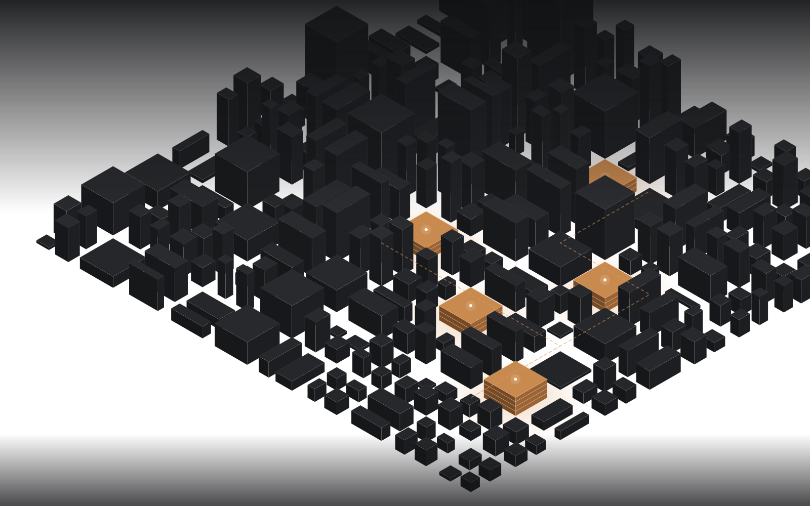
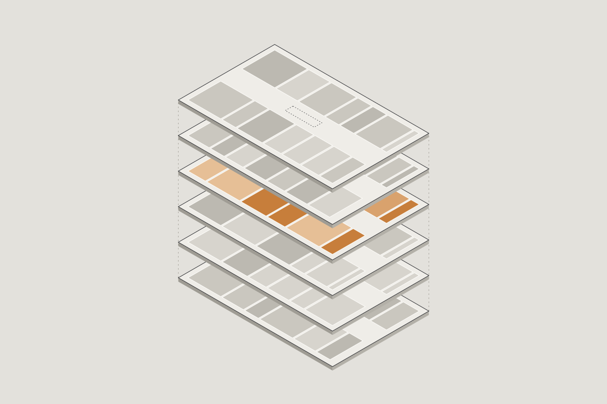
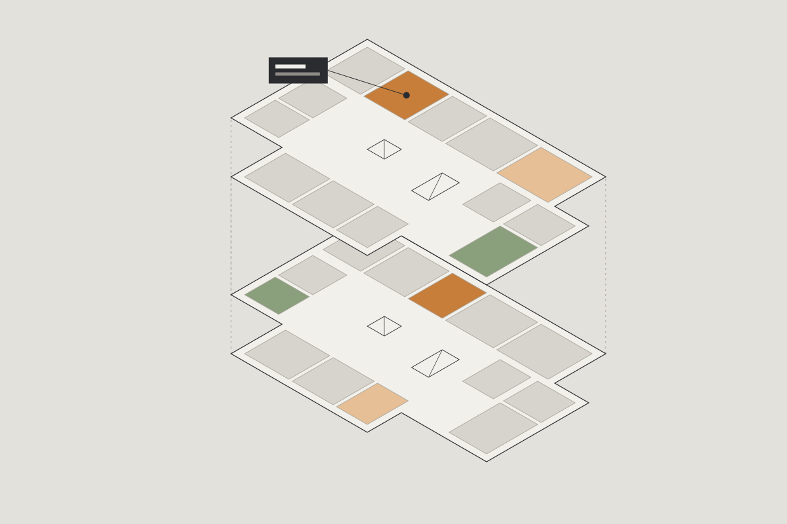
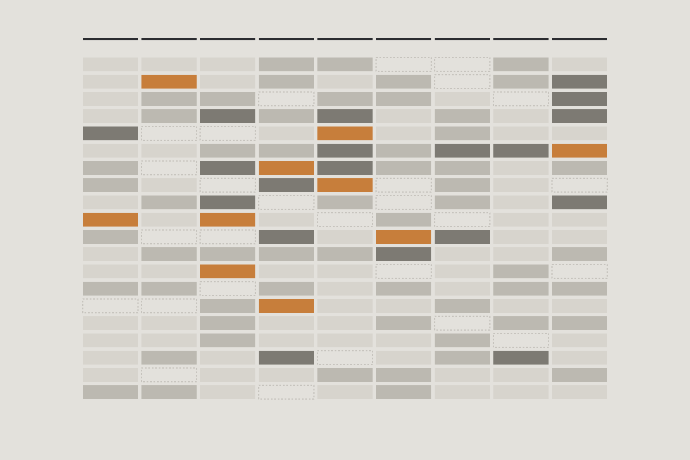
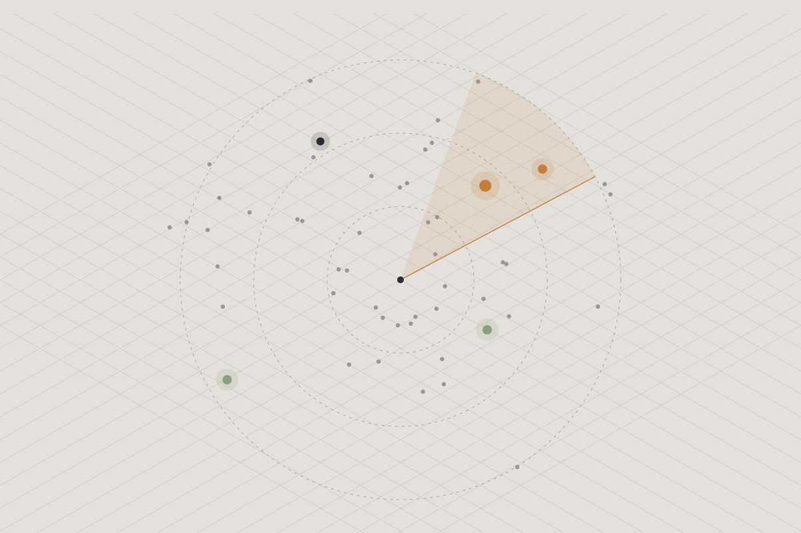

业主与运营方
“有客流，为什么不赚钱？
老商场、老街区还能怎么救？”
面向存量商业、低效资产与缺少成熟商管团队的项目。从经营与空间诊断开始，给出调改、招商与运营的路径。
诊断、调改与收益解锁
看见 九个问题维度，定位经营真正卡在哪里
比较 A / B / C 情景并排，变量现场可调
验证 每个数字都能回到来源、期间与口径
关于 KYWOO
很多存量商业的问题，不缺一份结论，缺的是一个能被追问的判断：为什么是这个方案？如果条件变了呢？
在 KYWOO，业主可以直接问：“如果 CAPEX 从 1.5 亿降到 8000 万呢？”——轻改、中改、重改三套方案会重新比较，并清楚列出放弃了哪些改造动作。
我们专注于低效、承压和需要重新定位的存量商业资产。
| 常见咨询流程 | KYWOO | |
|---|---|---|
| 工作方式 | 调研 → PPT → 建议 | 项目数据 → 证据 → 诊断 → 情景 → 决策 |
| 客户角色 | 听取结论 | 现场改变量，看结果怎么变 |
| 交付 | 固定报告 | 可交互的情景 ＋ 可执行的决策包 |
| 空间 | 多为示意 | 由商业判断触发空间需求与改造 |
| 项目结束后 | 知识留在人脑和文件里 | 决策理由、专家修正与实际结果回到同一套系统 |
我们服务谁
业主与运营方
面向存量商业、低效资产与缺少成熟商管团队的项目。从经营与空间诊断开始，给出调改、招商与运营的路径。
诊断、调改与收益解锁资方与收购方
把资产、市场、招商、运营与改造投入放在同一张表上，用确定性的财务模型检验出价、分期与风险。
收购决策冲刺品牌拓展团队
我们不替你找遍所有铺位，而是帮你判断已经收到的机会：有形条件、品牌契合与空间要求一起看。
品牌拓展决策包方法 · How we work
五个阶段不必一次走完。资料不全时，先把能确认的说清楚；需要补哪份材料、它会改变哪个判断，都会写明。
先确认这一次要回答什么：经营提升、局部改造、定位调整，还是收购。范围、期间和判断标准在开始前讲清楚。
你会得到
决策问题、分析边界与判断标准
资产、租约、经营、客群与空间资料逐项整理，每条标注来源、期间与口径。缺失就写“待核”，不补零，也不拿别的项目数字代替。
你会得到
证据包与数据缺口清单
用九个问题维度定位卡点，再沿“客流 → 销售 → 出租与开业稳定 → 资产表现”找出真正改变结果的机制。经营现象和推测原因分开写。
你会得到
诊断报告与问题优先级
形成两到三个真正不同的方案——例如暂不大改、在营轻调改、较大改造——按空间、招商、运营逐一说明代价。只有空间条件实质影响结果时，才进入空间方案。
你会得到
A / B / C 情景、执行计划与财务情景
记录最后选了什么、为什么、什么情况下需要重新打开。实施之后回收真实经营数据，对照当初的预期。
你会得到
决策记录与实施后的复盘
诊断框架 · 九个问题维度
经营表现链
四个环节不是严格的先后顺序；诊断看的是哪一环在拖累下一环。
从商业到空间
不是每个问题都需要动空间。我们要回答的是：哪个商业机制必须用这个空间动作，代价和财务影响又是什么。
服务 · Services
完整的能力是我们的工具箱；你只需要为眼前这一个决策付费。每项服务都可以单独开始，也可以接着上一项继续。
我们做什么
你会得到
我们做什么
你会得到
我们做什么
你会得到
我们做什么
你会得到
我们做什么
你会得到
我们做什么
你会得到
同一份项目数据，生成以下所有交付，数字不会互相矛盾。
A / B / C 并排，改一个变量，结果同步更新。
A4 杂志式排版，结论先行，一页一个判断。
16:9 汇报板，适合在会议上和业主逐页确认。
按铺号逐一上色，看清每一层的业态分工。
可点选的楼层与铺位，支持楼层隔离和爆炸视图。
每个数字的来源、期间、口径与状态，一查到底。
如果这是你的资产
条件一变，答案就会变。我们把每一个这样的问题，做成可以现场调整的情景。
一个出租率 95% 的商场，为什么仍然可能需要主动不续租一部分租户？
一座 18 亿的商场，目标 15% IRR，最多应该出多少钱？
老商场只有 5000 万 CAPEX，先投空调系统、大堂、业态组合还是动线？
商场三楼没人，到底是空间问题，还是业态、停留和客群不匹配？
主力店退租，是找下一个主力店，还是把大铺拆开重新组合？
1800 万的年客流，为什么 NOI 仍然不增长？

一座处于委托经营期的城市核心百货楼。我们从收益关系、物业条件和楼层业态讲起，比较三条调改路径，再把推荐路径的租金、NOI、回收期与保本租金做成随输入联动的情景。

从施工图中识别楼层与铺位边界，生成 45 个可点选的铺位。招商数据经过校验才会导入，租金等敏感字段不进入对外文件。
真实项目之外，我们持续积累可以复用的证据与线索。

约 130 个商业项目，按九个问题维度、50 项事实指标逐项取证。每条记录都标注来源与核验状态，未核验的不当作事实使用。

固定扫描上海、广州、深圳，轮换长三角与珠三角城市：公开招租、拍卖与经营权招选信号，至少两个独立来源才列为正式线索。
建筑、商业策划与数据背景的小团队。同一组人从诊断做到决策；模型负责整理，判断由人负责。
[职位]
[一句话背景：教育、过往机构与擅长的问题]
[年份] · [代表项目]
[职位]
[一句话背景：教育、过往机构与擅长的问题]
[年份] · [代表项目]
[职位]
[一句话背景：教育、过往机构与擅长的问题]
[年份] · [代表项目]
[职位]
[一句话背景：教育、过往机构与擅长的问题]
[年份] · [代表项目]
报价 · Engagement
可以从一次诊断开始，确认值得深入后再进入冲刺。策略方案与招商落地分开报价。
适合：先把问题看清楚
适合：需要在几个方案之间做决定
适合：决定之后，需要有人一起把它做出来
我们不按报告页数收费，也不把招商落地打包进策略方案的价格里。
[报价流程与付款方式待补充：例如首次沟通后多久给出书面范围与报价]
FAQ
我们不和综合顾问行比规模。我们专注存量商业：把“为什么不赚钱”拆成商业机制，判断哪些需要动空间、哪些不需要，再用情景比较代价和结果。整个推理过程是摊开的，你可以逐条追问。
AI 负责整理证据、组织分析，写出可以回溯来源的文字；设计、招商和财务的判断由专业人员负责。AI 的建议不会自动成为项目结论，必须经过专业人员和你的确认。
可以。我们先做诊断版：已有资料能支持的结论先说清楚，缺失项明确标为“待核”，不补零、不估造，并告诉你补哪份资料能解开哪个判断。
不一定。很多问题出在租户组合、租约结构或运营，而不是空间。只有空间条件实质影响经营或可行性时，我们才进入空间方案。
不会。情景测算是基于明确假设的估算，不是收益保证。正式财务指标由确定性模型计算，公式和输入都可以复核。
可以作为后续服务，单独报价。需要说明的是：分析得出的品牌匹配，不等于品牌的真实意向；意向以实际接洽记录为准。
只用于本项目。租金、NOI 等敏感字段不进入对外展示的文件。[保密协议安排待补充]
预约沟通
告诉我们资产在哪里、现在卡在哪里。我们会先判断它需要诊断、冲刺，还是暂时不需要大动。